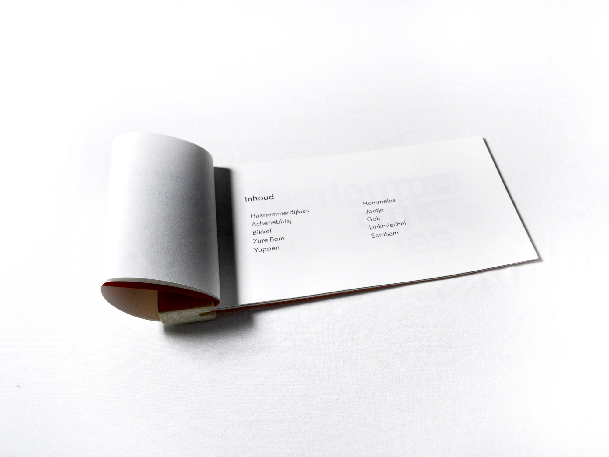
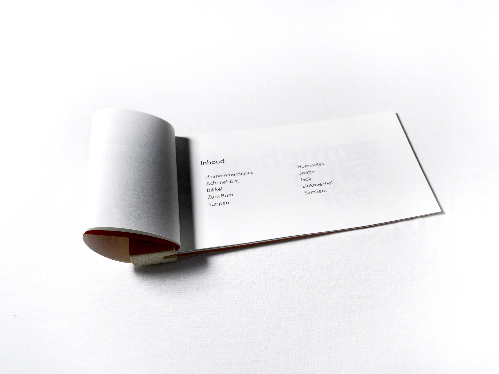
 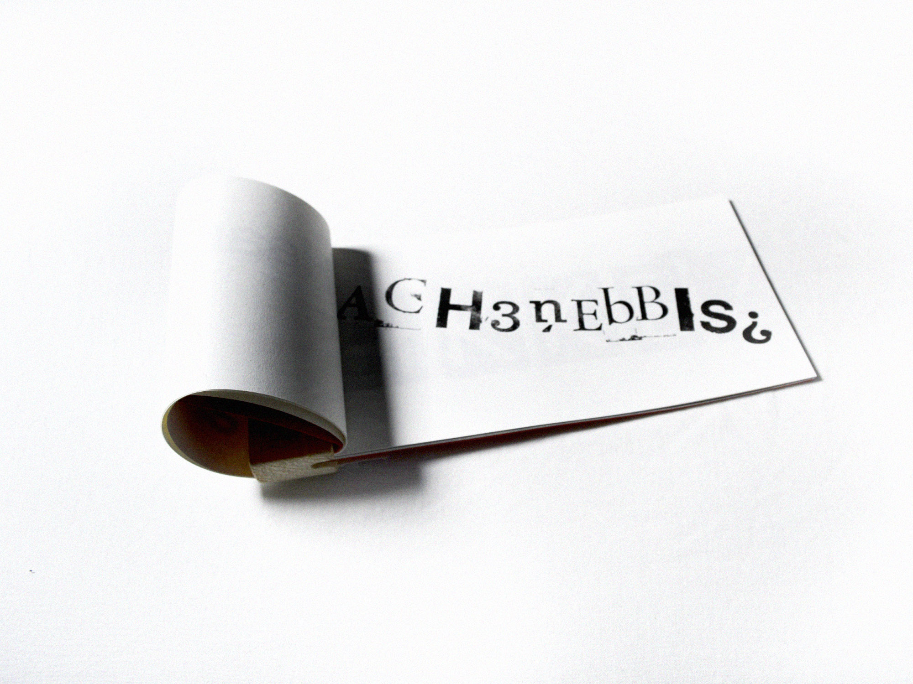
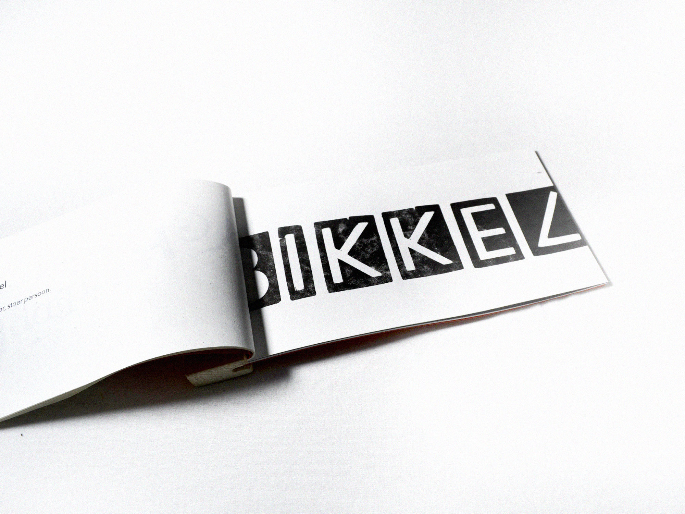
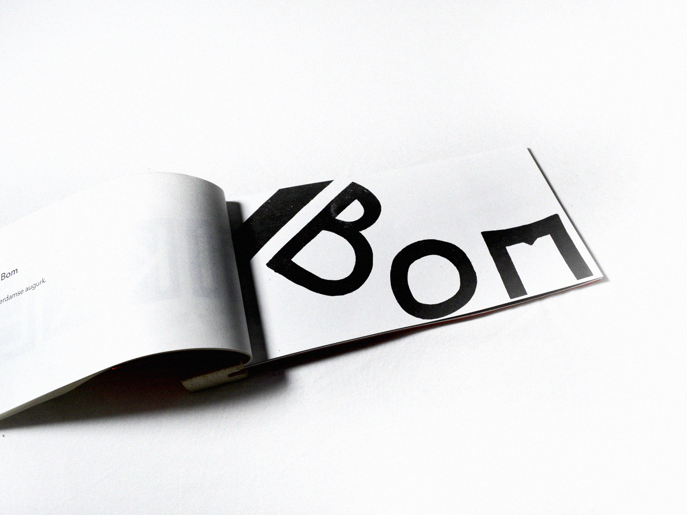
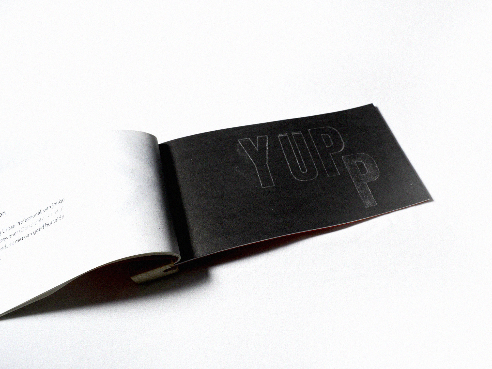
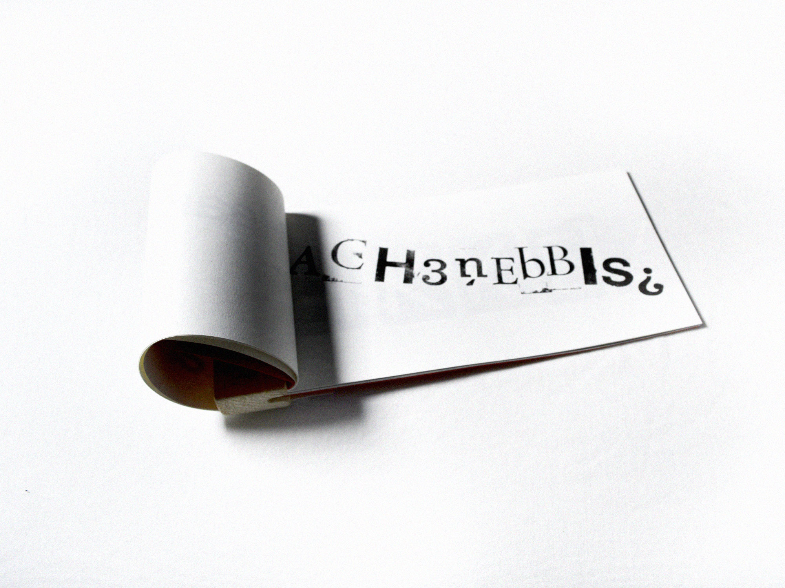
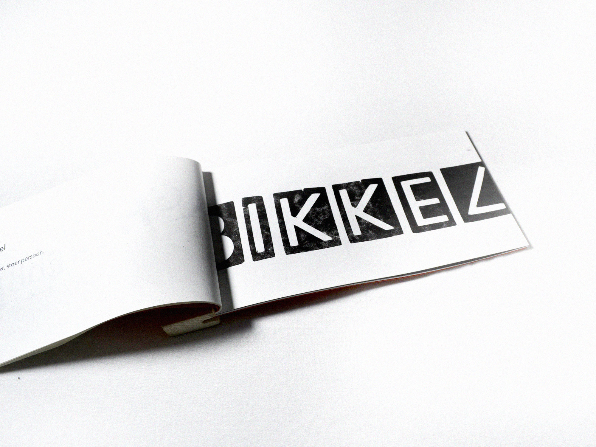
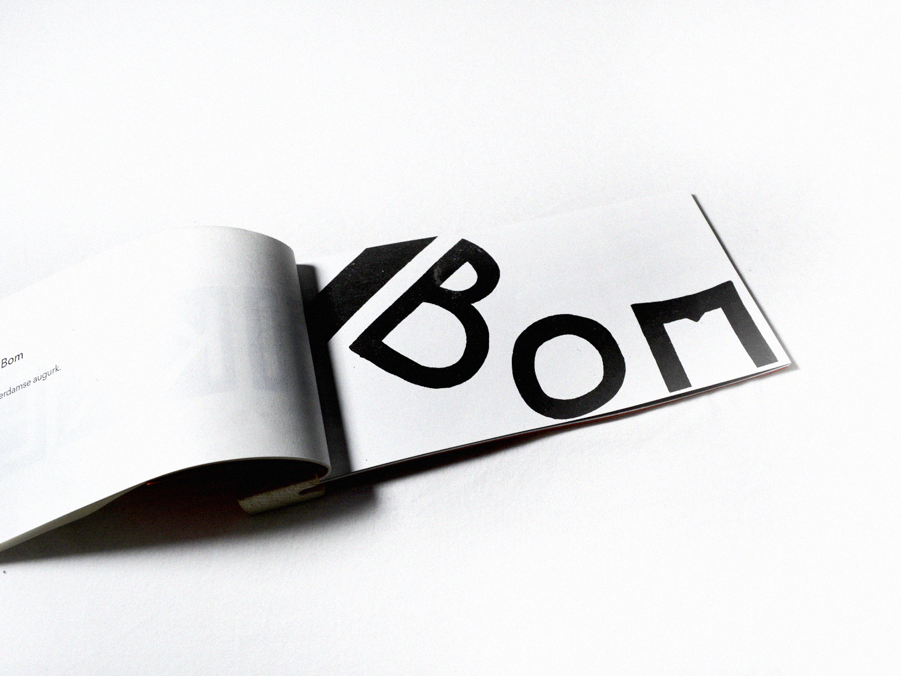
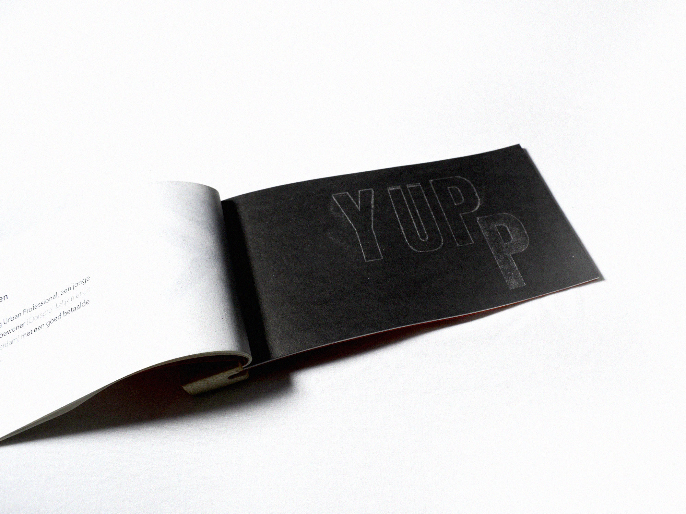
 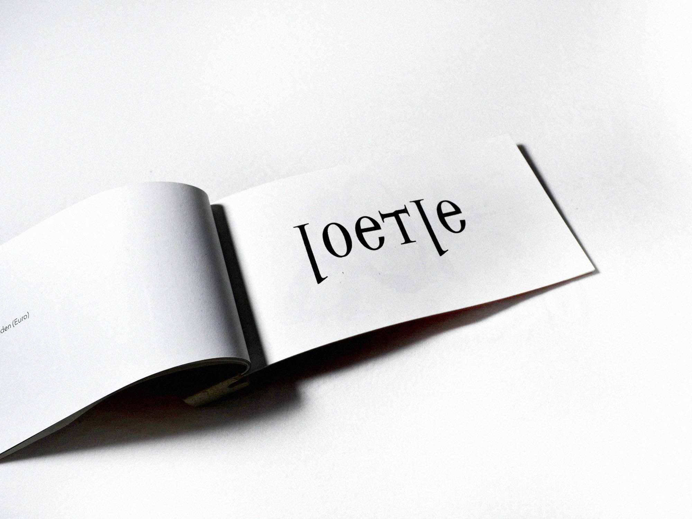
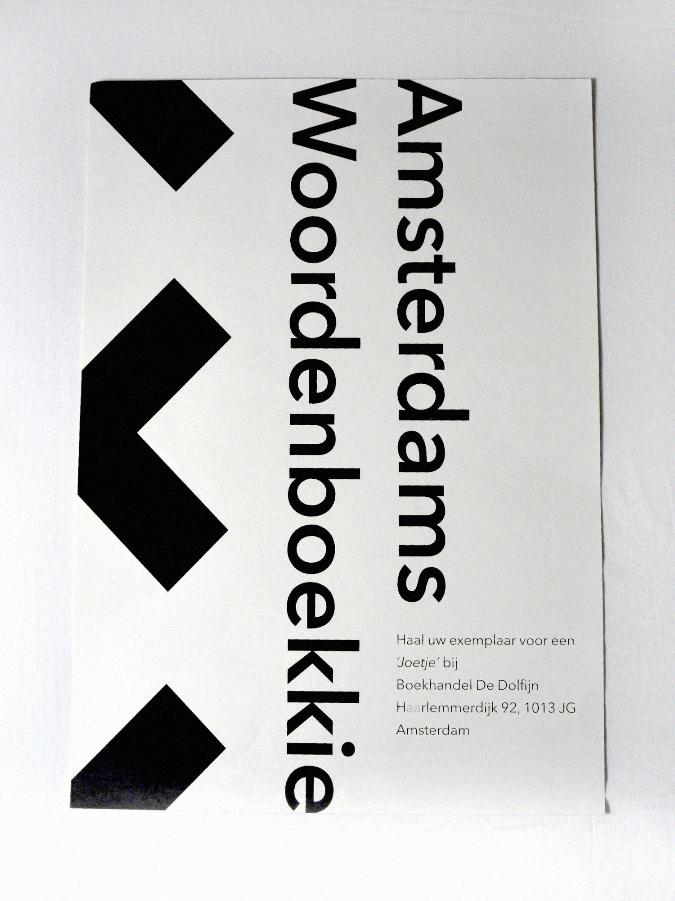
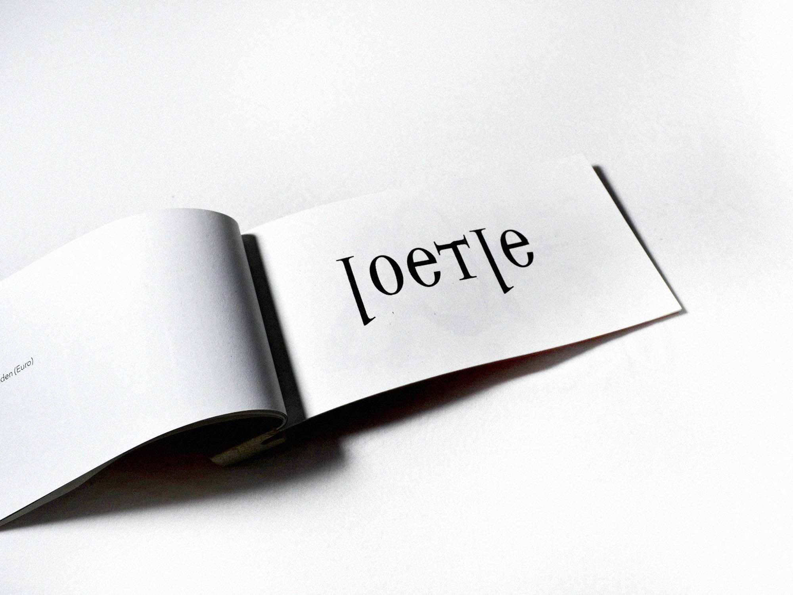
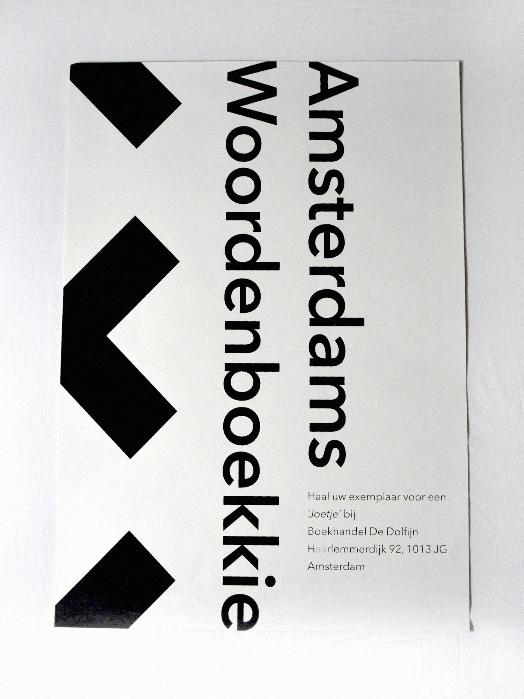

Amsterdams Woordenboekkie
Mijn familie en ik komen uit Amsterdam, zelf heb ik de stad als woonplaats maar kort meegemaakt maar de mensen had ik continue om me heen.
Deze mensen, waaronder m’n ouders, familie en ik zelf, gebruiken veel spreekwoorden en gezegden in hun vocabulaire. Iets wat je bijna alleen Amsterdammers hoort doen, vooral in de moderne tijd.
Mensen praten nu veel praktischer, netter, draaien er niet om heen en praten zo algemeen beschaafd Nederlands mogelijk. Mijn vriendin uit de Haarlemmermeer begreep deze gezegden ook niet tijdens onze gesprekken, waarvoor ik dus dit woordenboek heb gemaakt.